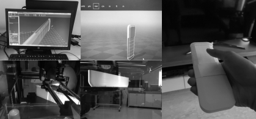
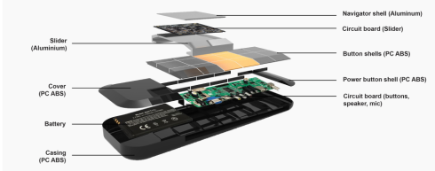
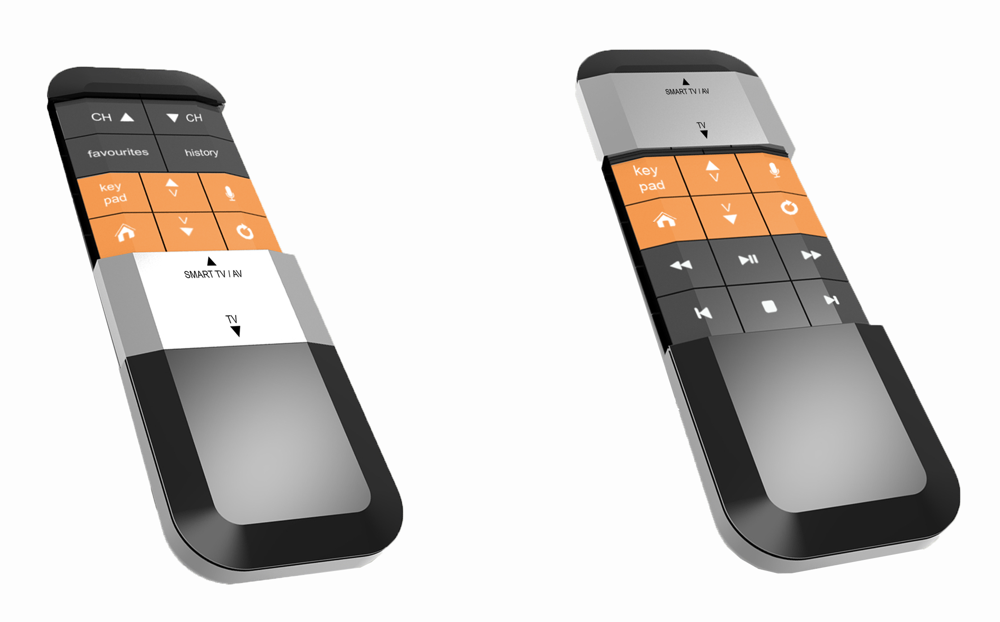
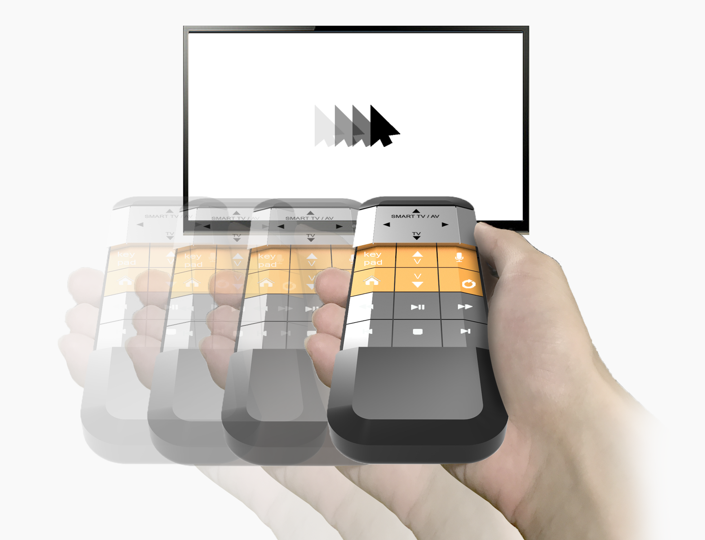
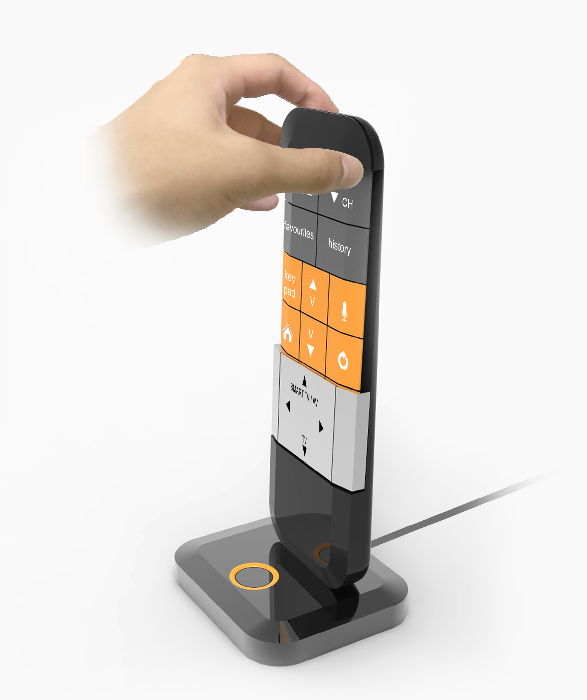
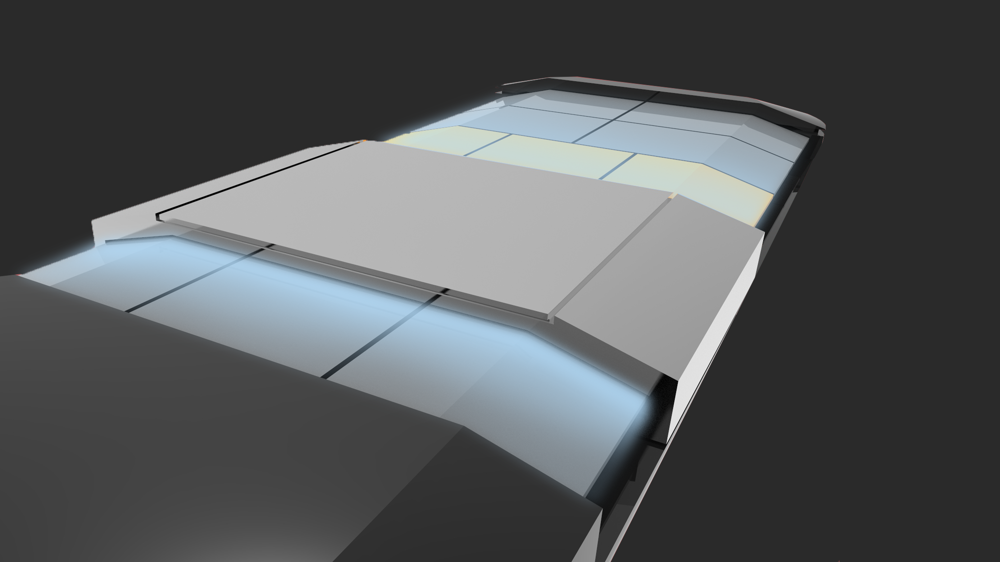
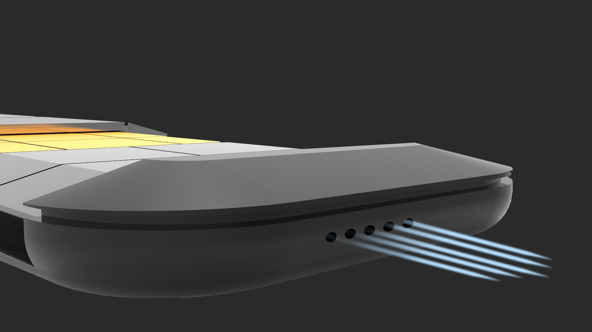

Slidepal: A Remote That Hides What You Do Not Need
Slidepal is a remote control with a sliding cover that physically hides whichever buttons are not relevant to the current TV mode, so the only buttons left in view are the ones actually worth pressing.

A school project that led to a factory floor in Suzhou
This school project was developed in collaboration with Omni Remotes. With the company's full support covering accommodation, the project was selected for a pitch to Omni Remotes' team in Suzhou, China, followed by a factory visit to observe how the company manufactures and stress tests its remote controls. The visit led to an internship offer as a designer at the company.
Investigate the usability challenges of conventional remote controls and develop a more intuitive user experience without the use of a screen. Through user research and pain point analysis, the project explored how interaction design, button hierarchy, and tactile feedback could simplify navigation and improve accessibility.
Watching how people actually use a remote
Before sketching any solution, the research looked at how people actually hold, scan, and press buttons on a conventional remote control.
Remote control observation
Observation sessions traced how people actually search for a button mid task, often without looking away from the screen.


Identified pain points
Users struggle to quickly locate and identify the correct button on a remote control due to dense layouts, inconsistent button hierarchy, and an overload of non essential functions. This leads to cognitive overload, frequent incorrect button presses, and reliance on visual confirmation from the screen, especially when switching between different TV modes or functions.

How might we make it easier for users to locate the right button on a remote control without relying on a screen?
Key solutions
- Reduce cognitive load by displaying only the essential controls required for common tasks.
- Contextualize interactions by revealing only the buttons relevant to the current TV mode (TV, streaming, media playback), minimizing unnecessary choices.
- Prioritize information hierarchy so users process fewer options at once, enabling faster and more intuitive navigation.
- Improve discoverability through clear button grouping, consistent layouts, and tactile differentiation, letting users identify controls quickly by sight or touch.
- Use visual cues to reinforce which mode the remote is currently in, at a glance.
From sketch to shortlist
Early concept work explored several different mechanisms for hiding and revealing buttons before the sliding cover direction was chosen.


Sizing the remote to the hand
With the mechanism settled, the next question was simple: what dimensions and materials would actually feel right in someone's hand.
Anthropometry data
With reference to anthropometry data, it was concluded that the remote control dimensions would be 15mm x 170mm x 58.6mm.

Form finding through prototyping
The width of the remote control is inspired by the width of an iPhone 5. Research has shown that the iPhone 5 feels best in the hands of most individuals, so its width was used as a reference point and tested through a series of 3D printed prototypes.

Exploded view
The final assembly breaks down into the sliding cover, the two button sets underneath it, and the main housing that holds the electronics.

Material study
Material tests weighed grip, durability, and manufacturing cost against the finish Omni Remotes would need to produce the design at scale.

The finished mechanism
Everything from the research and prototyping came together in one sliding shell.
Mode switching
By switching between SMART TV/AV mode and TV mode, the slider automatically hides the unnecessary buttons while exposing the common set of buttons, shown here in orange.

Cursor navigation
Beyond button presses, the remote also lets the wearer control a cursor on screen by maneuvering the remote control itself.

Charging and find my remote
A dedicated charging dock keeps the remote topped up, and doubles as a find my remote base, lighting up to help locate a misplaced remote.

Aesthetics
The final shell keeps the sliding seam and button grid as the only visible break in an otherwise smooth, minimal body, with the microphone and speaker tucked into the base of the housing.


What this project made possible
Slidepal turned a familiar frustration, hunting for the right button on a cluttered remote, into a single physical gesture: slide the cover, and only the relevant buttons are left in view. The project placed 1st runner up in Omni Remotes' competition, and the pitch in Suzhou led to a factory visit and an internship offer as a designer at the company, a direct result of research and prototyping work translating into something a manufacturing partner wanted to build.